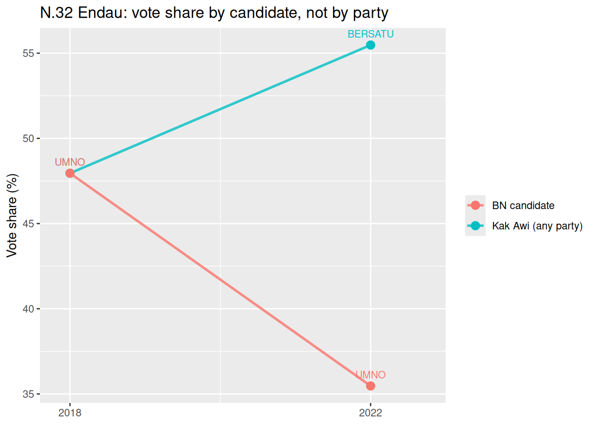

(Demo) Endau: Updating a seat prediction with survey data
Work
Demo
2026
Background
The 2026 Johor state election was my first attempt at Bayesian updating, adapted from Rigdon et al. (2009). That paper models a two-party contest. Our version handled several parties at once, using a Dirichlet distribution for each seat’s vote shares.
The model correctly called about 89% of the winning seats (X of Y). I wouldn’t credit the method alone: lucked played a huge part in everything.
The original analysis used my employer’s survey data, which I can’t share. This page is a demo of the core idea on one seat, Endau, using public results from electiondata.my and a synthetic survey.
ImportantThis is a deliberately simple version
The real model had several parties, poststratified by ethnicity, and handled undecided voters. This demo reduces the problem to a two-sided coin: BN (Kak Awi) vs everyone else. It shows the mechanics of Bayesian updating, not how accurate the method is.
Why Endau
Kak Awi won in 2018 under UMNO and again in 2022 under BERSATU, and she won in 2026 back under UMNO. Endau is a good test of whether a prior built from history can capture a candidate’s personal vote, or only the party’s.
The idea
This is the globe-tossing example from Statistical Rethinking (ch. 2). Instead of tossing a globe and counting water, I “ask” 40 voters and count BN (Kak Awi). I’m estimating \(p\), BN’s share of the vote, by grid approximation:
Define a grid of possible values of \(p\) (0 to 1)
Define a prior: how plausible each \(p\) looks before the survey, using past results
Compute the likelihood: how well each \(p\) explains “20 of 40 said BN”
Multiply prior by likelihood
Standardise so the result sums to 1. That is the posterior
The starting share blends the two past elections, weighting the recent one more:
# A tibble: 8 × 5
year name party votes share
<int> <chr> <chr> <dbl> <dbl>
1 2018 Alwiyah binti Talib (Kak Awi) UMNO 7136 48.0
2 2018 Norul Haszarul bin Abu Samah BERSATU 4056 27.3
3 2018 Roslan bin Nikmat PAS 3689 24.8
4 2022 Alwiyah binti Talib (Kak Awi) BERSATU 8433 55.5
5 2022 Mohd Youzaimi bin Yusof UMNO 5392 35.5
6 2022 Mohammad Fakrulradzi bin Mahmud AMANAH 1154 7.59
7 2022 Mohd Noorhisyam bin Ibrahim PEJUANG 145 0.954
8 2022 Ismail bin Don BEBAS 77 0.507
The seat’s history
kak_awi <- res %>%filter(grepl("Kak Awi", name)) %>%transmute(year, line ="Kak Awi (any party)", share, label = party)bn <- res %>%filter(coalition =="BN") %>%transmute(year, line ="BN candidate", share, label = party)ggplot(bind_rows(kak_awi, bn), aes(year, share, colour = line)) +geom_line(linewidth =1, alpha = .8) +geom_point(size =3) +geom_text(aes(label = label), vjust =-1, size =3, show.legend =FALSE) +scale_x_continuous(breaks =c(2018, 2022), expand =expansion(mult =c(0.1, 0.25))) +labs(y ="Vote share (%)", x =NULL, colour =NULL,title ="N.32 Endau: vote share by candidate, not by party")

In 2018 both lines are the same point, since Kak Awi was the BN candidate. In 2022 they split: she rose to 55% as BERSATU while the BN candidate fell to 35%. This shows her vote held across a party switch. It doesn’t prove the vote followed her, since 2022 was also a national swing towards PN.
Three starting beliefs, one survey
I compare three priors, so the reader can see how much the answer depends on the starting belief:
Flat: every \(p\) is equally plausible, so the survey decides.
Party: BN keeps its own past share. My belief is centred on that, give or take prior_sd.
Candidate: Kak Awi’s own 2022 share follows her back to UMNO. This is an assumption, and it is the claim being tested.
The survey is synthetic: 20 of 40 decided respondents say BN. I chose this.
# history -> starting sharesbn18 <- res %>%filter(year ==2018, coalition =="BN") %>%pull(share) /100bn22 <- res %>%filter(year ==2022, coalition =="BN") %>%pull(share) /100awi22 <- res %>%filter(year ==2022, grepl("Kak Awi", name)) %>%pull(share) /100p_party <-0.7* bn22 +0.3* bn18 # BN keeps what the party gotp_cand <-0.7* awi22 +0.3* bn18 # Kak Awi's own 2022 share follows her# synthetic surveyn <-40; k <-20# 1. gridp_grid <-seq(0, 1, length.out =200)# 2. priors ("around this value, give or take prior_sd")prior_sd <-0.1prior_flat <-rep(1, 200)prior_party <-dnorm(p_grid, mean = p_party, sd = prior_sd)prior_cand <-dnorm(p_grid, mean = p_cand, sd = prior_sd)# 3. likelihood of 20 BN out of 40, at every plikelihood <-dbinom(k, size = n, prob = p_grid)# 4 + 5. posterior = prior x likelihood, standardisedupdate <-function(prior) { post <- likelihood * prior post /sum(post)}post_flat <-update(prior_flat)post_party <-update(prior_party)post_cand <-update(prior_cand)c(bn18 = bn18, bn22 = bn22, awi22 = awi22, p_party = p_party, p_cand = p_cand)
Solid line = posterior, dashed line = prior, grey line = 50%.
Sanity check
With a flat prior, the grid answer should match the exact Beta answer. The difference below should be about zero.
exact <-dbeta(p_grid, k +1, n - k +1)max(abs(post_flat - exact /sum(exact)))
[1] 6.938894e-18
What this shows
The same survey gives different answers depending on the starting belief. [Fill in one sentence from your table: which prior ended closest to the survey, and which moved the most.]
How far the belief moves depends on the prior spread (prior_sd) and the number of respondents. Try prior_sd of 0.05 or 0.2, and a different k, and re-run.
What this doesn’t show
The survey is invented, so this can’t say which prior is right, or how accurate the method is.
Grouping everyone else into one side means “over 50%” is a majority, not “wins the seat”. In a multi-party race BN can win with less.
The 70/30 weights, prior_sd and the candidate prior are judgement calls, not estimates.
Limitations
I understood the two-party version of an election model relatively well. Extending it to several parties, in a landscape where coalitions and their members keep changing, was harder, and I can’t say I fully understood every modelling choice. I used AI assistance while building this demo and can explain each step. The main uncertainties in the real model were how party labels map across elections, how much weight history should get, and how undecided respondents are treated.
Reproducibility
Past results: electiondata.my, using the query above, saved as data/endau-past-results.xlsx. All other numbers come from the code on this page.